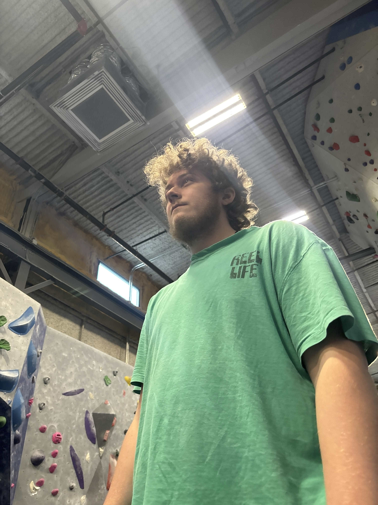

Bio

Hello, as stated above, my name is Ethan Paul! I was born and raised here in Rhode Island--specifically raised in Coventry by my mother. I have one sister and we all live together with my grandparents; furthermore, I still live in Coventry and plan to do so until I graduate from NEIT. I was in a Career and Techical program at Coventry High School, where I was awarded Cybersecurity Student of the 2025 class--on top of the numerous other awards I earned through my efforts-- there I learned many things about cybersecurity. I was in around eight clubs, two of which were pretty cool, namely the Secretary of State's Civic Leadership Program where I was a Civic Liaison representing my school and the AFA CyberPatriot Club where my team went on to win first place in the New England Region (something we got recognized for by the Rhode Island General Assembly--I was on TV!). I have a bunch of hobbies, some of which I've talked about in class; however, they are things that bring me a lot of joy. Through bouldering I've lost around 60ish pounds, something that has shown great benefits to my health and that I hope to continue with. Thank you for reading this long paragraph (a bit longer than 5 sentences), I hope it was helpful in learning more about me! :]